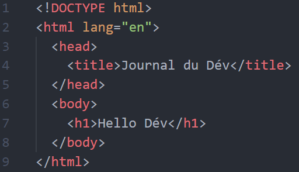

Le Journale du Dév
Fait pour les jeunes programmeur en quetes de nouveaux apprentissage
La sctructure de base d'un site
Les normes du web
Les conteneur html5 et bonne maniere indispensable à tous site internet
Les Base de la création Web
Comprendre l'HTML5
langage balistique et compréhension du web!
Les Base de la création Web
présrequi : éditeur de text(par ex:VS Code, SublimText3,...), et un navigateur(chrome, edge,...)
Html5 est un language de balistique, les balises sont des conteneurs. il sont utilisable dans un fichier .html, le ficher de la page principal du site se nome "index.hml" et se situe a la racine des dossiers du site. Il existe 2 principal type de balise:
- ,
balise unique ne peut pas contenir d'autre balise, il prend seulement des attribues en parametre. - ,
balise ouvert/fermer la balise d'ouverture comport seulement son nom (et ses attribues) alors que la balise de fermeture contient un "/" devant son nom, peut contenir des balises entre ses 2 balise(et des attribues)
- Les Normes des gros conteneur
- Les Normes des balises indicatif
- Les Normes des micro balise
Menu des racourcis :
fini de parler allons voir un exemple:
Si on regarde la balise on peut voir que la balise contient 1 attribue qui a pour nom lang(langage) au quelle on a affecter la valeur "fr"(francais), pour mettre un attribut sur une varible il faut donc utiliser la syntaxe nom="contenue" a l'interieur de la balise d'ouverture. Le html étant un language balistique il est trés simple de le comprendre, mais son utilisation néccesssites de conaitre un certain nombre de balise et d'attribue(du moins les plus utiliser).
Aller c'est partie créons notre premier site web en html5: La premiere chose a faire est donc de créer un ficher "index.html", puis vous allez l'ouvrir avec votre éditeur de text/code, Chaque éditeur a des aides propre a lui. il est donc important de trouver un éditeur avec le quelle vous serais alaise et qui vous fait gagner du temps. Nous allons donc créer les premiers balises, en marquant "html" suivit d'un ctrl+space(racourcis controlle avec la barre d'espace), cela vas vous proposer plusieur choix. En faite ctrl+space nous permet d'ecrire plus vite car l'editeur trouve le code a notre place. La il y a 2 solution soit plein de balises sont créé soit juste la balise est créé. La balise html est la base du site, elle ne compprtera que 2 balise l'interieur d'elle meme,
et que je vous invite a créer dans cette ordre. pour l'instant seule la balise vas nous interreser, en effect se qui se passe dans cette balise est beaucoup plus visuelle que dans le header. Pour mieux comprendre nous allons créer une balise h1 comme celle la " Hello Dév! " les balises avec un 'h' est un chiffre derrier sont des titres, plus le nombre est petit, plus le titre est important et gros. Vous comprenez mieux maintenant ? Aller ajoutons un paragraphe qui se nome dans le body. A l'interieur du paragraphe marquer "Lorem50" puis ctrl+space cela vas vous marquer un text de 50 charactere a l'interieur du paragraphe.Structurer correctement sont HTML
- Les Normes des gros conteneur
- Les Normes des balises indicatif
- Les Normes des micro balise
Menu des racourcis :
Les Normes des gros conteneur :
un site web se doit d'être conforme a des conventions que nous
allons voir tout au long de se cours. Deja une page web est
constitué d'une head est d'un body, comme ses balise html le
signal, le head est l'esprit du site, c'est la ou te se qui est
pas directictement visble doit etre mis.
comme les noms des pages, les relations entre les fichers de
style(.css), la langue de la page ou meme son logo. Alors que le
body, le corps de la page lui sert a mettre tout le contenue brut
de la page(sans style) c'est dans le body que vous mettre le plus
de balise html et c'est a l'interieur de lui qu'on vas pouvoir
parler de structure front d'un site.
Les Normes des balises indicatif :
La structure a l'interieur de body est trés resemblant d'un site
a un autre, il y auras généralement une partie principal, qui
s'appelle main ou l'on vas mettre directement le contenue que
l'utilisateur est venu chercher(la page est censer etre créer
juste pour le contenue du main), cette parti peut aussi bien
contenir du text, des formulaire, des bouttons, des liens,...
c'est vraiment cette partie qui vas deffinir si l'utilisateur
vas rester sur le site ou pas.
mais pour créer des page intetactive et pas juste une vitrine il
est important de bien relier les pages a l'interieur de son
site. Pour cela on utilse se qui s'appelle un menu de
navigation, enfaite c'est juste un liste de lien(biensur plus ou
moins styliser) qui permet la navigation, la balise HMLT de
navigation s'appelle d'ailleur nav.
Pour mettre un proprieter sur votre site(sur tout pour etre dans
la légaliter) il est néccessaire de mettre en place un
copyRight, celui-ci est en générale placer tout en bas du chaque
page du site, ou meme sur la page A propos/contact. pour faire
apparaitre le logo de copyRight il faut marque © dans des
balise html, vous pouvez aussi rajoute All Right Reserved By ...
suivit de l'année de creation du site. Il existe aussi la tête
de page, qui a pour balise head(ne pas confondre avec le header)
on l'on a tendance a mettre le nom du site avec sont slogant
(surtout sur la page d'acceuil).
Vous venez donc de voir les 4 conventions les plus utilsé. Mais
il en exite encore une infinté qui sont plus ou moins populaire.
Comme le bouttons de retour a l'acceuil(souvent l'image du logo
cliquable situer en haut a gauche), La page contact qui permet
de vous envoyer un message si jamais un utilisateur est perdu
dans le site, qu'il a trouver un bug, ou meme si l'utilisateur
est simplement curieux. La barre de recherche est aussi une
norme pour les site qui on de grosse base donnée avec des
resultats pour chaque recherche.
Les Normes des micro balise :
Il existe aussi des norme a des echelles plus precise comme le fait de mettre les liens dans une couleur différente, les attribues "alt"(description) a remplir pour chaque img afficher, mettre des effect(au survolement par exemple) sur les elements interactifs